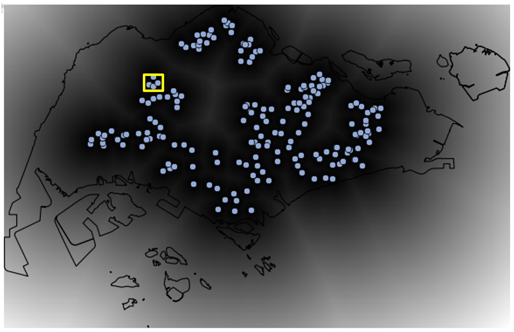
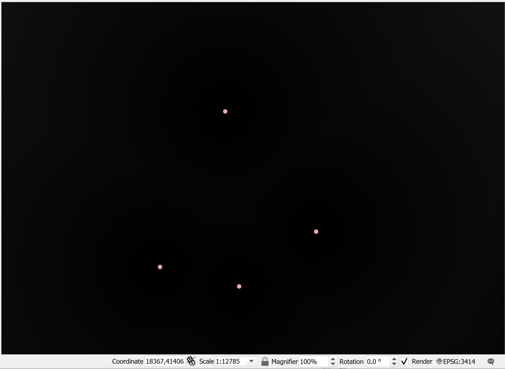

7 Cartographic Modelling with Raster-based GIS
The true power of a GIS is its analytical capability. IN this hands-on exercise, you will learn how to perform raster-based GIS analysis also popularly known as mapthematics by using QGIS.
By the end of this session, you will be able to:
create a raster data from a vector GIS layer,
extract raster layer,
georeference a raster layer and
derive proximity layer(s) by using distance function of QGIS.
7.1 Data Preparation
Two GIS data are available for the analysis. They are:
- Location of primary, secondary, mixed and JC (i.e. Education).
- Outline map of Singapore (i.e. CoastalOutline).
7.1.1 Add the GIS data into QGIS Project
Before you can start to perform any analysis, you need to start a new QGIS project.
DIY: Using the steps you had learned from last lesson, add the Education and CoastalOutline into the newly created QGIS project.
7.1.2 Using attribute query to select a subset from a master layer
The Education layer consists of locations of education institutions such as primary schools, secondary school, mixed and JC. We are only interested on education institutions that belong to primary and secondary schools.
DIY: Using the steps you had learned from last lesson, extract and save the primary and secondary schools in two separate GIS vector layers.
Your screen should look similar to the figure below.

7.2 Raster Data Modelling
In this exercise, you will learn how to model raster data. The exercise focusses on how to rasterise a vector GIS data layer using QGIS geoprocessing functions.
7.2.1 Editing attribute data
In this section, you will create a new field in the attribute table of a vector GIS data and update values of the newly created field. You will name the field as POI_CODE. The data type of this data field is integer.
- At Browser panel, right-click on the
Primary Schoolslayer. - Select Open Attribute Table from the context menu.
The Attribute table dialog window of Primary Schools appears.

- From the icon bar of the Attribute table window, click on the Open field calculator icon.
The Field calculator dialog window appears.
- For Output file name, type POI_CODE.
- For Output filed type, select Whole number (integer) from the drop-down list.
- For Output field, change to 3.
- At the Expression pane, type 1.
The Field calculator dialog window should look similar to the figure below now.
• Click on the OK button.
Notice that a new field called POI_CODE has been added into the Attribute table of Primary School. Also notice that the POI_CODE values are 1s.

You will end the editing process now.
- At the icon menu of Attribute table window, click on the Toggle editing mode icon.
The Stop editing dialog window appears.

• Click on the Save button.
Now, you will close the Attribute table window of Primary Schools layer.
- At the Attribute table of Primary Schools, click on the Close button.
7.3 Rasterising a vector GIS data layer
In QGIS, several functions can be used to rasterise a vector GIS layer into a raster GIS layer such as Rasterize function of GDAL and the Shape to Grid function of SAGA. In this section, you will learn how to rasterise the primary school vector GIS layer into a raster GIS layer using the Shapes to grid function of SAGA because we found that it is more effective.
- From the menu bar of QGIS, select Processing -> Toolbox.
The Processing Toolbox pane appears at the right hand side of the Map View window

- From the Geoprocessing Toolbox, click on GDAL -> Vector conversion -> Rasterize (vector to raster).

The Rasterize (Vactor to raster) dialog window appears.
- For Input layer, select
Primary Schoolfrom the drop-down list. - For Field to use for a burn-in value [optional], select
POI_CODEfrom the drop-down list. - For Output raster size unit, select Georeferenced units from the dropdown list.
- For Width/Horizontal resolution, type 50.
- For Height/Vertical resolution, type 50.
- For Output extent, select Calculate from layer -> CostalOutline from the drop-down list.

Your screen should look similar to the figure below.

- Click on the Run button.
After a few seconds, a new raster layer called the Grid will be added onto the Browser panel.
- From Rasterize dialog window, click on Close button to close the dialog window.
Let us take a good look at this newly created raster layer. According to the legend, the primary school cells will be coded as 1 and the remaining grid cells will be coded as no data.
DIY: Use the Identify tool of QGIS to validate if the data layer has been coded correctly.
Quiz: What is the value of the dark cell in Grid layer: ___________________
Quiz: What is the value of the white cell in Grid layer: __________________
DIY: Using the step you learned from previous exercise, save the output raster into GeoPackage format. Call the layer
PriSch_ras.
7.4 Accessibility Modelling using Raster-based GIS Analysis
In this section, you will learn the basic concept of accessibility from geospatial perspective. You will also learn how to use appropriate raster GIS analyse function and mapping techniques to analyse and visualize accessibility maps.
7.5 Creating proximity layer using raster GIS analysis
In this section, you will learn how to perform proximity analysis and derived distance layer using raster GIS analysis function. You will use the raster version of the primary school layer as the target layer in the analysis instead of the vector version of the primary schools layer (Do you know why?)
You will perform the task using the rasterize function of Geospatial Data Abstraction Library (GDAL), a library for reading and writing raster geospatial data formats, and is released under the permissive X/MIT style free software license by the Open Source Geospatial Foundation. As a library, it presents a single abstract data model to the calling application for all supported formats. It may also be built with a variety of useful command-line utilities for data translation and processing (http://en.wikipedia.org/wiki/GDAL).
- From the Processing Toolbox panel, navigate to GDAL Analysis -> Proximity (raster distance).

- Double-click on Proximity (raster distance).
The Proximity (raster distance) dialog window appears.
- For Input layer, select Rasterize from the drop-down list.
- For A list of pixel values in ……, type 1.
Quiz: Explain why value 1 is used?
- For Distance units, select Georeferenced coordinates from the drop-down list.
- For the other three options, keep as default (e.g. -1).
- For Proximity Map, select Save to a temporary file from the context menu.
The Proximity (raster distance) dialog window should look similar to the figure below.
You are ready to run the function.
- Click on the Run button.
After a few seconds a new layer called Proximity Map will be added into the Browse panel and display as a raster layer on the Display window.
Before we continue, let us close Proximity dialog window.
- From the Proximity dialog window, click on Close button.
Let us explore the Proximity Map layer.
- Display the Primary School layer.
Your screen should look similar to the figure below.

- Zoom into a
Primary Schoollayer.

Your screen should look similar to the figure below.

In order to visualise the grid values properly, we need to stretch the cell values.
- From the Layer panel, right-click on Stretch Using Current Extent.

Now, a clear grid layer appears on the Map View window.

Now, you will examine the value of the grid.
- Make sure that
Proximity Maplayer is active. - Hover the mouse over the primary school point.
- Click on the grid.
The Identify Results dialog window shows that the value of the selected grid is 0.

Next, you will examine the value of the grid immediately next to the primary school.
- Hover the mouse over the grid next to the primary school point.
- Click on the grid.
The Identify Results window reveals that the value of the selected grid is 50.

DIY: Using the skills you had learned from previous section, save the Proximity Map into Geopackage format.